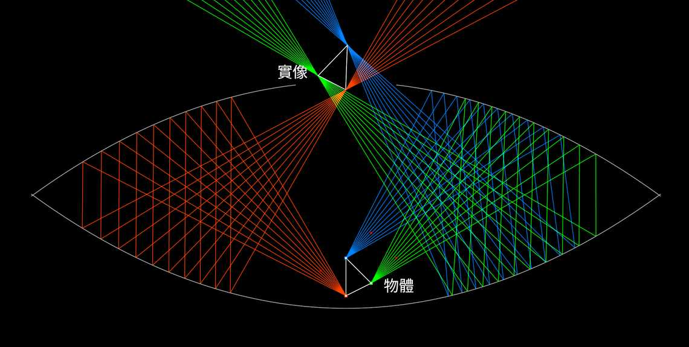

貢獻者：Mario Petitclerc
幻象鏡 是一種有趣的光學幻覺演示裝置，它利用兩個面對面的拋物面鏡來產生一個立體懸浮影像的幻覺。該裝置由以下部件構成：
當來自物體的光線在兩個鏡子之間反射時，它的方向會改變為形成一個看似逼真、立體的影像，懸浮於幻象鏡的表面上方。這種幻象如此逼真，人們常常試圖觸摸影像，結果發現什麼也沒有。
幻象鏡被廣泛用於科學演示、玩具及新奇物品，以說明光學中反射和光線行為的原理。
在模擬器中開啟
